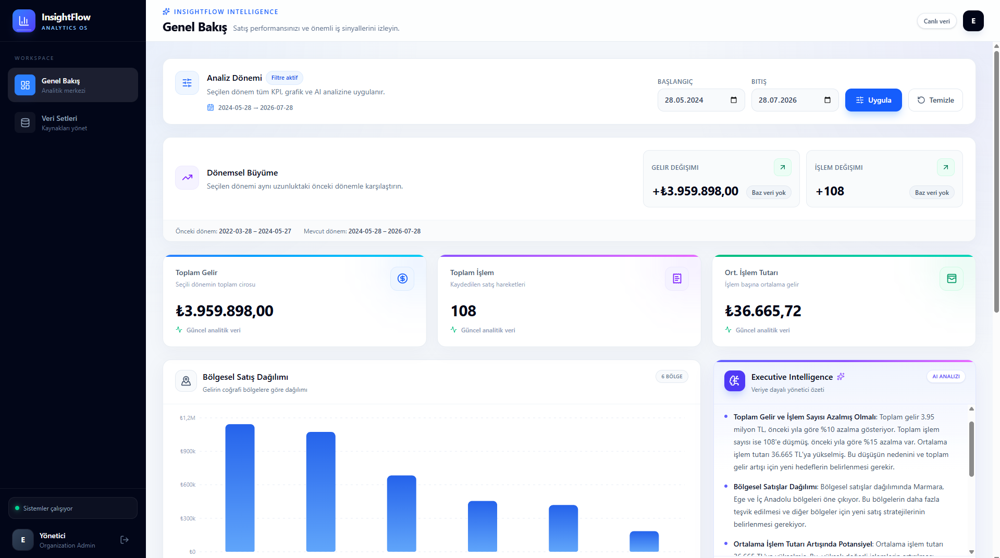
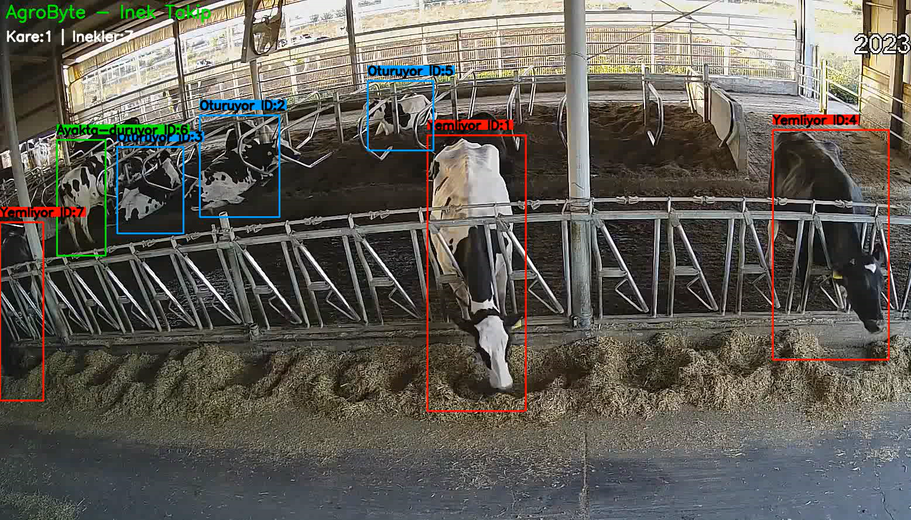

Backend Development
API geliştirme, veri erişimi, kimlik doğrulama ve asenkron işlemler.
Merhaba, ben Emin Osman Atcı 👋
Yeni mezun bir Bilgisayar Mühendisiyim. Python ile güvenilir backend servisleri ve veri katmanları geliştiriyor; AI özelliklerini gerçek uygulama akışlarına entegre ediyorum.
Bilgisayar mühendisliği eğitimim boyunca Python merkezli yazılım geliştirme, veri odaklı sistemler ve yapay zekâ uygulamaları üzerine çalıştım. Özellikle güvenilir backend servisleri kurup veriyi işleyen ve AI özelliklerini gerçek ürün akışlarına entegre eden sistemler geliştirmeye odaklanıyorum.
Stajlarımda veri analitiği ve bilgisayarlı görü alanlarında deneyim kazanırken; projelerimde REST API tasarımı, PostgreSQL veri modeli, asenkron işleme, test otomasyonu ve AI entegrasyonları gibi üretim odaklı katmanlarda çalıştım.
Kariyerime Python backend ve software engineering ekseninde; veri yoğun ve AI destekli uygulamalar geliştiren, mühendislik kalitesine önem veren bir teknoloji ekibinde başlamak istiyorum.
Ana odağım Python backend geliştirme ve veri katmanı; AI entegrasyonları ile test, otomasyon ve geliştirme araçları bu sistemleri uçtan uca tamamlıyor.
API geliştirme, veri erişimi, kimlik doğrulama ve asenkron işlemler.
Veri modelleme, ilişkisel veritabanları, analiz ve raporlama süreçleri.
LLM entegrasyonları, RAG ve bilgisayarlı görü çözümlerini uygulama katmanına taşıma.
Test, otomasyon, versiyon kontrolü ve modern geliştirme araçları.
Python backend, veri sistemleri ve uygulamalı yapay zekâ tarafındaki mühendislik yaklaşımımı gösteren öne çıkan çalışmalar.
Kurumsal Analitik Platform
Kurumsal verileri güvenli API'ler ve arka plan iş akışlarıyla işleyen, analiz eden ve AI destekli yönetici içgörülerine dönüştüren Python backend odaklı analitik platform.

Görüntü İşleme Tabanlı Hayvan Takip Sistemi
Çiftlik ortamındaki inekleri kamera görüntülerinden tespit eden, kimlik bazlı takip eden ve davranışlarını analiz ederek olası anomalileri izleyen bilgisayarlı görü sistemi.

Veri analitiğinden AI Ar-Ge'ye uzanan staj deneyimlerim, veriyle çalışma ve uygulama geliştirme tarafındaki çok yönlü teknik temelimi destekliyor.
Enerji sektöründeki büyük ölçekli veriler üzerinde SQL ile analiz ve raporlama çalışmaları gerçekleştirdim. Sorgu performansının iyileştirilmesi üzerine çalışırken, Power BI ile karar destek süreçlerinde kullanılabilecek etkileşimli dashboard ve analizler geliştirdim.
Bilgisayarlı görü ve derin öğrenme tabanlı Ar-Ge çalışmalarında görev aldım. OpenCV ve YOLO ile nesne tespiti, çoklu nesne takibi ve insan davranışı analizi üzerine çalıştım; İş Sağlığı ve Güvenliği senaryolarına yönelik görüntü analizi çözümlerinin geliştirilmesine katkı sağladım.
Python Backend / Software Engineering başta olmak üzere, veri yoğun ve AI destekli uygulamalar geliştirebileceğim yeni mezun pozisyonlarına açığım. Benimle e-posta veya LinkedIn üzerinden iletişime geçebilirsiniz.
Python Backend
Data & Databases
Applied AI